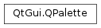

QPalette¶
Synopsis¶
Functions¶
- def
__eq__(p) - def
__ne__(p) - def
alternateBase() - def
background() - def
base() - def
brightText() - def
brush(cg, cr) - def
brush(cr) - def
button() - def
buttonText() - def
cacheKey() - def
color(cg, cr) - def
color(cr) - def
currentColorGroup() - def
dark() - def
foreground() - def
highlight() - def
highlightedText() - def
isBrushSet(cg, cr) - def
isCopyOf(p) - def
isEqual(cr1, cr2) - def
light() - def
link() - def
linkVisited() - def
mid() - def
midlight() - def
resolve() - def
resolve(arg__1) - def
resolve(mask) - def
setBrush(cg, cr, brush) - def
setBrush(cr, brush) - def
setColor(cg, cr, color) - def
setColor(cr, color) - def
setColorGroup(cr, windowText, button, light, dark, mid, text, bright_text, base, window) - def
setCurrentColorGroup(cg) - def
shadow() - def
swap(other) - def
text() - def
toolTipBase() - def
toolTipText() - def
window() - def
windowText()
Detailed Description¶
The
PySide2.QtGui.QPaletteclass contains color groups for each widget state.A palette consists of three color groups: Active , Disabled , and Inactive . All widgets in Qt contain a palette and use their palette to draw themselves. This makes the user interface easily configurable and easier to keep consistent.
If you create a new widget we strongly recommend that you use the colors in the palette rather than hard-coding specific colors.
The color groups:
- The Active group is used for the window that has keyboard focus.
- The Inactive group is used for other windows.
- The Disabled group is used for widgets (not windows) that are disabled for some reason.
Both active and inactive windows can contain disabled widgets. (Disabled widgets are often called inaccessible or grayed out .)
In most styles, Active and Inactive look the same.
Colors and brushes can be set for particular roles in any of a palette’s color groups with
PySide2.QtGui.QPalette.setColor()andPySide2.QtGui.QPalette.setBrush(). A color group contains a group of colors used by widgets for drawing themselves. We recommend that widgets use color group roles from the palette such as “foreground” and “base” rather than literal colors like “red” or “turquoise”. The color roles are enumerated and defined in theQPalette.ColorRoledocumentation.We strongly recommend that you use the default palette of the current style (returned by
QGuiApplication.palette()) and modify that as necessary. This is done by Qt’s widgets when they are drawn.To modify a color group you call the functions
PySide2.QtGui.QPalette.setColor()andPySide2.QtGui.QPalette.setBrush(), depending on whether you want a pure color or a pixmap pattern.There are also corresponding
PySide2.QtGui.QPalette.color()andPySide2.QtGui.QPalette.brush()getters, and a commonly used convenience function to get theQPalette.ColorRolefor the currentQPalette.ColorGroup:PySide2.QtGui.QPalette.window(),PySide2.QtGui.QPalette.windowText(),PySide2.QtGui.QPalette.base(), etc.You can copy a palette using the copy constructor and test to see if two palettes are identical using
PySide2.QtGui.QPalette.isCopyOf().
PySide2.QtGui.QPaletteis optimized by the use of implicit sharing , so it is very efficient to passPySide2.QtGui.QPaletteobjects as arguments.Warning
Some styles do not use the palette for all drawing, for instance, if they make use of native theme engines. This is the case for both the Windows Vista and the macOS styles.
See also
QApplication.setPalette()QWidget.setPalette()PySide2.QtGui.QColor
-
class
PySide2.QtGui.QPalette¶ -
class
PySide2.QtGui.QPalette(button) -
class
PySide2.QtGui.QPalette(windowText, button, light, dark, mid, text, bright_text, base, window) -
class
PySide2.QtGui.QPalette(button) -
class
PySide2.QtGui.QPalette(button, window) -
class
PySide2.QtGui.QPalette(windowText, window, light, dark, mid, text, base) -
class
PySide2.QtGui.QPalette(palette) Parameters: - bright_text –
PySide2.QtGui.QBrush - dark –
PySide2.QtGui.QBrush - light –
PySide2.QtGui.QBrush - base –
PySide2.QtGui.QBrush - window –
PySide2.QtGui.QBrush - button –
PySide2.QtCore.Qt.GlobalColor - palette –
PySide2.QtGui.QPalette - windowText –
PySide2.QtGui.QBrush - text –
PySide2.QtGui.QBrush - mid –
PySide2.QtGui.QBrush
Constructs a palette object that uses the application’s default palette.
See also
QApplication.setPalette()QApplication.palette()Constructs a palette from the
buttoncolor. The other colors are automatically calculated, based on this color.Windowwill be the button color as well.Constructs a palette. You can pass either brushes, pixmaps or plain colors for
windowText,button,light,dark,mid,text,bright_text,baseandwindow.See also
Constructs a palette from the
buttoncolor. The other colors are automatically calculated, based on this color.Windowwill be the button color as well.Constructs a palette from a
buttoncolor and awindow. The other colors are automatically calculated, based on these colors.Constructs a palette with the specified
windowText,window,light,dark,mid,text, andbasecolors. The button color will be set to the window color.Constructs a copy of
p.This constructor is fast thanks to implicit sharing .
- bright_text –
-
PySide2.QtGui.QPalette.ColorGroup¶ Constant Description QPalette.Disabled QPalette.Active QPalette.Inactive QPalette.Normal synonym for Active
-
PySide2.QtGui.QPalette.ColorRole¶ 
The enum defines the different symbolic color roles used in current GUIs.
The central roles are:
Constant Description QPalette.Window A general background color. QPalette.Background This value is obsolete. Use Window instead. QPalette.WindowText A general foreground color. QPalette.Foreground This value is obsolete. Use instead. QPalette.Base Used mostly as the background color for text entry widgets, but can also be used for other painting - such as the background of combobox drop down lists and toolbar handles. It is usually white or another light color. QPalette.AlternateBase Used as the alternate background color in views with alternating row colors (see QAbstractItemView.setAlternatingRowColors()).QPalette.ToolTipBase Used as the background color for PySide2.QtWidgets.QToolTipandPySide2.QtWidgets.QWhatsThis. Tool tips use the Inactive color group ofPySide2.QtGui.QPalette, because tool tips are not active windows.QPalette.ToolTipText Used as the foreground color for PySide2.QtWidgets.QToolTipandPySide2.QtWidgets.QWhatsThis. Tool tips use the Inactive color group ofPySide2.QtGui.QPalette, because tool tips are not active windows.QPalette.Text The foreground color used with Base. This is usually the same as theWindowText, in which case it must provide good contrast withWindowandBase.QPalette.Button The general button background color. This background can be different from Windowas some styles require a different background color for buttons.QPalette.ButtonText A foreground color used with the Buttoncolor.QPalette.BrightText A text color that is very different from WindowText, and contrasts well with e.g.Dark. Typically used for text that needs to be drawn whereTextorWindowTextwould give poor contrast, such as on pressed push buttons. Note that text colors can be used for things other than just words; text colors are usually used for text, but it’s quite common to use the text color roles for lines, icons, etc.There are some color roles used mostly for 3D bevel and shadow effects. All of these are normally derived from
Window, and used in ways that depend on that relationship. For example, buttons depend on it to make the bevels look attractive, and Motif scroll bars depend onMidto be slightly different fromWindow.Constant Description QPalette.Light Lighter than Buttoncolor.QPalette.Midlight Between ButtonandLight.QPalette.Dark Darker than Button.QPalette.Mid Between ButtonandDark.QPalette.Shadow A very dark color. By default, the shadow color is Qt.black.Selected (marked) items have two roles:
Constant Description QPalette.Highlight A color to indicate a selected item or the current item. By default, the highlight color is Qt.darkBlue.QPalette.HighlightedText A text color that contrasts with Highlight. By default, the highlighted text color isQt.white.There are two color roles related to hyperlinks:
Constant Description QPalette.Link A text color used for unvisited hyperlinks. By default, the link color is Qt.blue.QPalette.LinkVisited A text color used for already visited hyperlinks. By default, the linkvisited color is Qt.magenta.Note that we do not use the
LinkandLinkVisitedroles when rendering rich text in Qt, and that we recommend that you use CSS and theQTextDocument.setDefaultStyleSheet()function to alter the appearance of links. For example:browser = QTextBrowser() linkColor = QColor(Qt.red) sheet = QString.fromLatin1("a { text-decoration: underline color: %1 }").arg(linkColor.name()) browser.document().setDefaultStyleSheet(sheet)
Constant Description QPalette.NoRole No role; this special role is often used to indicate that a role has not been assigned.
-
PySide2.QtGui.QPalette.alternateBase()¶ Return type: PySide2.QtGui.QBrushReturns the alternate base brush of the current color group.
See also
QPalette.ColorRolePySide2.QtGui.QPalette.brush()
-
PySide2.QtGui.QPalette.background()¶ Return type: PySide2.QtGui.QBrushUse
PySide2.QtGui.QPalette.window()instead.
-
PySide2.QtGui.QPalette.base()¶ Return type: PySide2.QtGui.QBrushReturns the base brush of the current color group.
See also
QPalette.ColorRolePySide2.QtGui.QPalette.brush()
-
PySide2.QtGui.QPalette.brightText()¶ Return type: PySide2.QtGui.QBrushReturns the bright text foreground brush of the current color group.
See also
QPalette.ColorRolePySide2.QtGui.QPalette.brush()
-
PySide2.QtGui.QPalette.brush(cg, cr)¶ Parameters: Return type: Returns the brush in the specified color
group, used for the given colorrole.See also
PySide2.QtGui.QPalette.color()PySide2.QtGui.QPalette.setBrush()QPalette.ColorRole
-
PySide2.QtGui.QPalette.brush(cr) Parameters: cr – PySide2.QtGui.QPalette.ColorRoleReturn type: PySide2.QtGui.QBrushThis is an overloaded function.
Returns the brush that has been set for the given color
rolein the currentQPalette.ColorGroup.See also
PySide2.QtGui.QPalette.color()PySide2.QtGui.QPalette.setBrush()QPalette.ColorRole
Return type: PySide2.QtGui.QBrushReturns the button brush of the current color group.
See also
QPalette.ColorRolePySide2.QtGui.QPalette.brush()
Return type: PySide2.QtGui.QBrushReturns the button text foreground brush of the current color group.
See also
QPalette.ColorRolePySide2.QtGui.QPalette.brush()
-
PySide2.QtGui.QPalette.cacheKey()¶ Return type: PySide2.QtCore.qint64Returns a number that identifies the contents of this
PySide2.QtGui.QPaletteobject. DistinctPySide2.QtGui.QPaletteobjects can have the same key if they refer to the same contents.The will change when the palette is altered.
-
PySide2.QtGui.QPalette.color(cr)¶ Parameters: cr – PySide2.QtGui.QPalette.ColorRoleReturn type: PySide2.QtGui.QColorThis is an overloaded function.
Returns the color that has been set for the given color
rolein the currentQPalette.ColorGroup.See also
PySide2.QtGui.QPalette.brush()QPalette.ColorRole
-
PySide2.QtGui.QPalette.color(cg, cr) Parameters: Return type: Returns the color in the specified color
group, used for the given colorrole.See also
PySide2.QtGui.QPalette.brush()PySide2.QtGui.QPalette.setColor()QPalette.ColorRole
-
PySide2.QtGui.QPalette.currentColorGroup()¶ Return type: PySide2.QtGui.QPalette.ColorGroupReturns the palette’s current color group.
-
PySide2.QtGui.QPalette.dark()¶ Return type: PySide2.QtGui.QBrushReturns the dark brush of the current color group.
See also
QPalette.ColorRolePySide2.QtGui.QPalette.brush()
-
PySide2.QtGui.QPalette.foreground()¶ Return type: PySide2.QtGui.QBrushUse
PySide2.QtGui.QPalette.windowText()instead.
-
PySide2.QtGui.QPalette.highlight()¶ Return type: PySide2.QtGui.QBrushReturns the highlight brush of the current color group.
See also
QPalette.ColorRolePySide2.QtGui.QPalette.brush()
-
PySide2.QtGui.QPalette.highlightedText()¶ Return type: PySide2.QtGui.QBrushReturns the highlighted text brush of the current color group.
See also
QPalette.ColorRolePySide2.QtGui.QPalette.brush()
-
PySide2.QtGui.QPalette.isBrushSet(cg, cr)¶ Parameters: Return type: PySide2.QtCore.boolReturns
trueif theQPalette.ColorGroupcgandQPalette.ColorRolecrhas been set previously on this palette; otherwise returnsfalse.See also
-
PySide2.QtGui.QPalette.isCopyOf(p)¶ Parameters: p – PySide2.QtGui.QPaletteReturn type: PySide2.QtCore.boolReturns
trueif this palette andpare copies of each other, i.e. one of them was created as a copy of the other and neither was subsequently modified; otherwise returnsfalse. This is much stricter than equality.See also
PySide2.QtGui.QPalette.operator=()PySide2.QtGui.QPalette.operator==()
-
PySide2.QtGui.QPalette.isEqual(cr1, cr2)¶ Parameters: Return type: PySide2.QtCore.boolReturns
true(usually quickly) if color groupcg1is equal tocg2; otherwise returnsfalse.
-
PySide2.QtGui.QPalette.light()¶ Return type: PySide2.QtGui.QBrushReturns the light brush of the current color group.
See also
QPalette.ColorRolePySide2.QtGui.QPalette.brush()
-
PySide2.QtGui.QPalette.link()¶ Return type: PySide2.QtGui.QBrushReturns the unvisited link text brush of the current color group.
See also
QPalette.ColorRolePySide2.QtGui.QPalette.brush()
-
PySide2.QtGui.QPalette.linkVisited()¶ Return type: PySide2.QtGui.QBrushReturns the visited link text brush of the current color group.
See also
QPalette.ColorRolePySide2.QtGui.QPalette.brush()
-
PySide2.QtGui.QPalette.mid()¶ Return type: PySide2.QtGui.QBrushReturns the mid brush of the current color group.
See also
QPalette.ColorRolePySide2.QtGui.QPalette.brush()
-
PySide2.QtGui.QPalette.midlight()¶ Return type: PySide2.QtGui.QBrushReturns the midlight brush of the current color group.
See also
QPalette.ColorRolePySide2.QtGui.QPalette.brush()
-
PySide2.QtGui.QPalette.__ne__(p)¶ Parameters: p – PySide2.QtGui.QPaletteReturn type: PySide2.QtCore.boolReturns
true(slowly) if this palette is different fromp; otherwise returnsfalse(usually quickly).Note
The current
QPalette.ColorGroupis not taken into account when comparing palettesSee also
PySide2.QtGui.QPalette.operator==()
-
PySide2.QtGui.QPalette.__eq__(p)¶ Parameters: p – PySide2.QtGui.QPaletteReturn type: PySide2.QtCore.boolReturns
true(usually quickly) if this palette is equal top; otherwise returnsfalse(slowly).Note
The current
QPalette.ColorGroupis not taken into account when comparing palettesSee also
PySide2.QtGui.QPalette.operator!=()
-
PySide2.QtGui.QPalette.resolve(arg__1)¶ Parameters: arg__1 – PySide2.QtGui.QPaletteReturn type: PySide2.QtGui.QPaletteReturns a new
PySide2.QtGui.QPalettethat has attributes copied fromother.
-
PySide2.QtGui.QPalette.resolve() Return type: PySide2.QtCore.uint
-
PySide2.QtGui.QPalette.resolve(mask) Parameters: mask – PySide2.QtCore.uint
-
PySide2.QtGui.QPalette.setBrush(cr, brush)¶ Parameters: - cr –
PySide2.QtGui.QPalette.ColorRole - brush –
PySide2.QtGui.QBrush
Sets the brush for the given color
roleto the specifiedbrushfor all groups in the palette.See also
PySide2.QtGui.QPalette.brush()PySide2.QtGui.QPalette.setColor()QPalette.ColorRole- cr –
-
PySide2.QtGui.QPalette.setBrush(cg, cr, brush) Parameters: This is an overloaded function.
Sets the brush in the specified color
group, used for the given colorrole, tobrush.See also
PySide2.QtGui.QPalette.brush()PySide2.QtGui.QPalette.setColor()QPalette.ColorRole
-
PySide2.QtGui.QPalette.setColor(cr, color)¶ Parameters: - cr –
PySide2.QtGui.QPalette.ColorRole - color –
PySide2.QtGui.QColor
This is an overloaded function.
Sets the color used for the given color
role, in all color groups, to the specified solidcolor.See also
PySide2.QtGui.QPalette.brush()PySide2.QtGui.QPalette.setColor()QPalette.ColorRole- cr –
-
PySide2.QtGui.QPalette.setColor(cg, cr, color) Parameters: Sets the color in the specified color
group, used for the given colorrole, to the specified solidcolor.See also
PySide2.QtGui.QPalette.setBrush()PySide2.QtGui.QPalette.color()QPalette.ColorRole
-
PySide2.QtGui.QPalette.setColorGroup(cr, windowText, button, light, dark, mid, text, bright_text, base, window)¶ Parameters: - cr –
PySide2.QtGui.QPalette.ColorGroup - windowText –
PySide2.QtGui.QBrush - button –
PySide2.QtGui.QBrush - light –
PySide2.QtGui.QBrush - dark –
PySide2.QtGui.QBrush - mid –
PySide2.QtGui.QBrush - text –
PySide2.QtGui.QBrush - bright_text –
PySide2.QtGui.QBrush - base –
PySide2.QtGui.QBrush - window –
PySide2.QtGui.QBrush
Sets a the group at
cg. You can pass either brushes, pixmaps or plain colors forwindowText,button,light,dark,mid,text,bright_text,baseandwindow.See also
- cr –
-
PySide2.QtGui.QPalette.setCurrentColorGroup(cg)¶ Parameters: cg – PySide2.QtGui.QPalette.ColorGroupSet the palette’s current color group to
cg.
-
PySide2.QtGui.QPalette.shadow()¶ Return type: PySide2.QtGui.QBrushReturns the shadow brush of the current color group.
See also
QPalette.ColorRolePySide2.QtGui.QPalette.brush()
-
PySide2.QtGui.QPalette.swap(other)¶ Parameters: other – PySide2.QtGui.QPaletteSwaps this palette instance with
other. This function is very fast and never fails.
-
PySide2.QtGui.QPalette.text()¶ Return type: PySide2.QtGui.QBrushReturns the text foreground brush of the current color group.
See also
QPalette.ColorRolePySide2.QtGui.QPalette.brush()
-
PySide2.QtGui.QPalette.toolTipBase()¶ Return type: PySide2.QtGui.QBrushReturns the tool tip base brush of the current color group. This brush is used by
PySide2.QtWidgets.QToolTipandPySide2.QtWidgets.QWhatsThis.Note
Tool tips use the Inactive color group of
PySide2.QtGui.QPalette, because tool tips are not active windows.See also
QPalette.ColorRolePySide2.QtGui.QPalette.brush()
-
PySide2.QtGui.QPalette.toolTipText()¶ Return type: PySide2.QtGui.QBrushReturns the tool tip text brush of the current color group. This brush is used by
PySide2.QtWidgets.QToolTipandPySide2.QtWidgets.QWhatsThis.Note
Tool tips use the Inactive color group of
PySide2.QtGui.QPalette, because tool tips are not active windows.See also
QPalette.ColorRolePySide2.QtGui.QPalette.brush()
-
PySide2.QtGui.QPalette.window()¶ Return type: PySide2.QtGui.QBrushReturns the window (general background) brush of the current color group.
See also
QPalette.ColorRolePySide2.QtGui.QPalette.brush()
-
PySide2.QtGui.QPalette.windowText()¶ Return type: PySide2.QtGui.QBrushReturns the window text (general foreground) brush of the current color group.
See also
QPalette.ColorRolePySide2.QtGui.QPalette.brush()
© 2018 The Qt Company Ltd. Documentation contributions included herein are the copyrights of their respective owners. The documentation provided herein is licensed under the terms of the GNU Free Documentation License version 1.3 as published by the Free Software Foundation. Qt and respective logos are trademarks of The Qt Company Ltd. in Finland and/or other countries worldwide. All other trademarks are property of their respective owners.